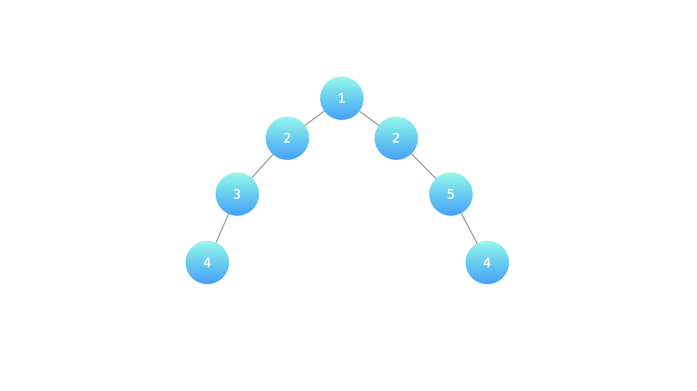

剑指 Offer 55 - I. 计算二叉树的深度
递归后序：深度 = 左右子树深度的较大者 + 1，空树为 0；从叶子往根一路传回来。
思路
- 递归函数直接就是定义：空树返回 0，否则
max(左深度, 右深度) + 1。 - 后序顺序保证算本结点时左右子树的深度已经拿到，无需额外存储。
图解
最优解
1class Solution {2 public int calculateDepth(TreeNode root) {3 if (root == null) return 0;4 // 深度 = 左右子树深度的较大者 + 1（自己这一层）5 return Math.max(calculateDepth(root.left), calculateDepth(root.right)) + 1;6 }7}题目
某公司架构以二叉树形式记录，请返回该公司的层级数。
示例 1：

输入：root = [1, 2, 2, 3, null, null, 5, 4, null, null, 4] 输出: 4 解释: 上面示例中的二叉树的最大深度是 4，沿着路径 1 -> 2 -> 3 -> 4 或 1 -> 2 -> 5 -> 4 到达叶节点的最长路径上有 4 个节点。
提示：
节点总数 <= 10000
注意：本题与主站 104 题相同：https://leetcode.cn/problems/maximum-depth-of-binary-tree/
题面取自力扣当前版本。
数据快照 2026-11-04。题面版权归力扣所有，本站点仅供本人学习使用，请勿对外发布。